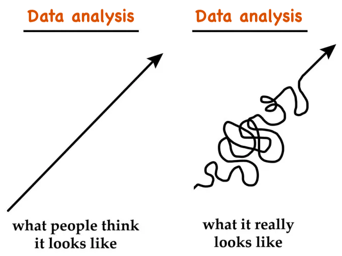
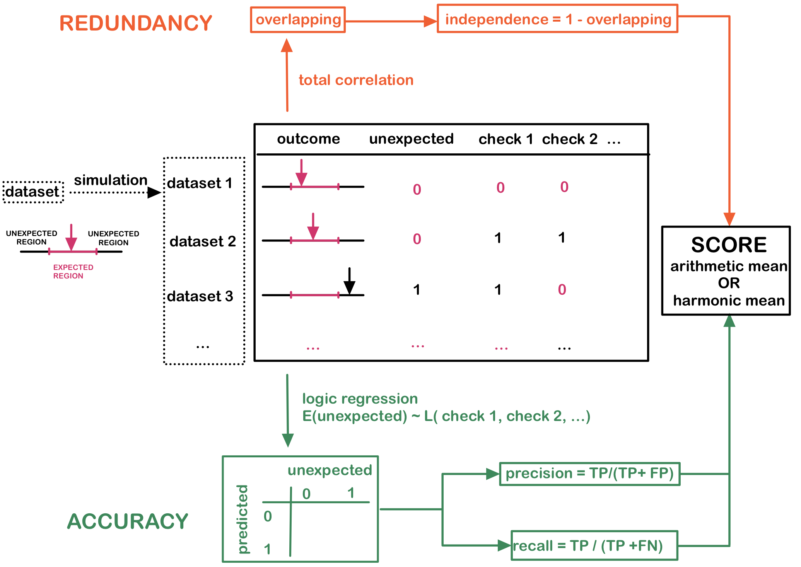
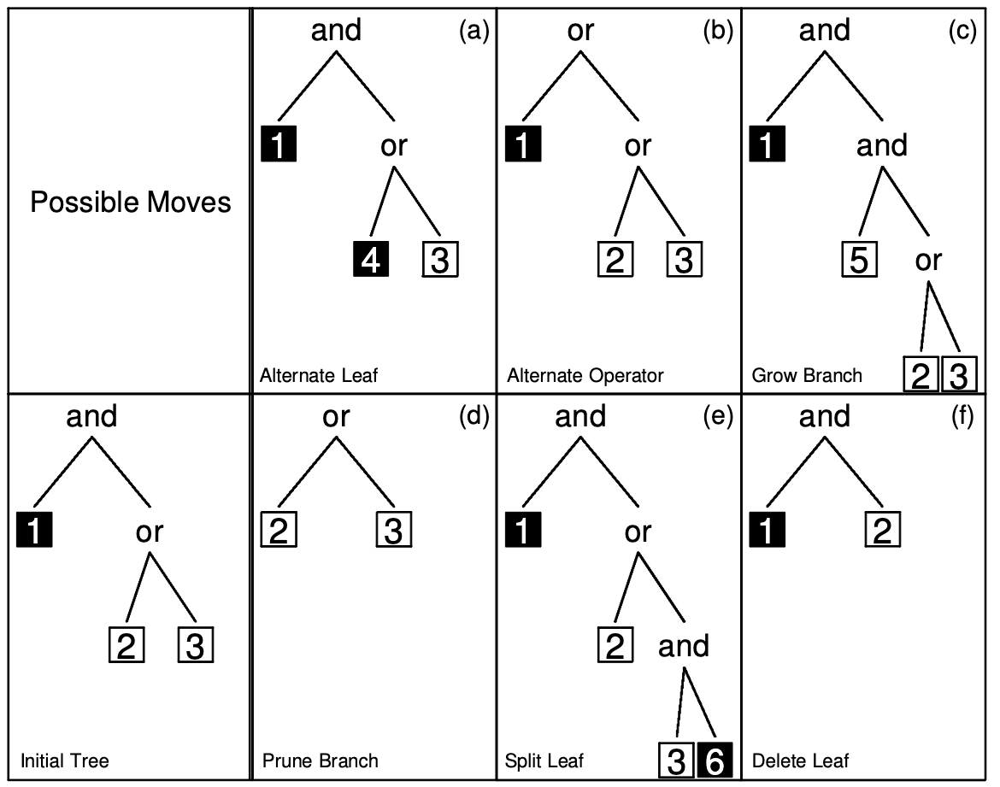
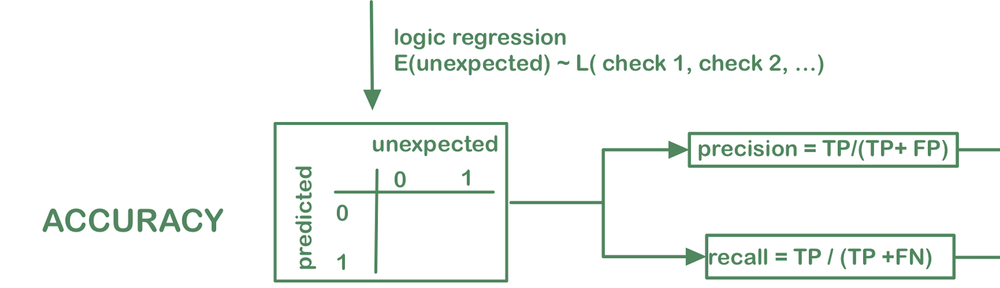
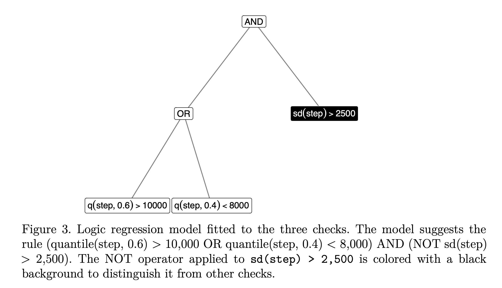
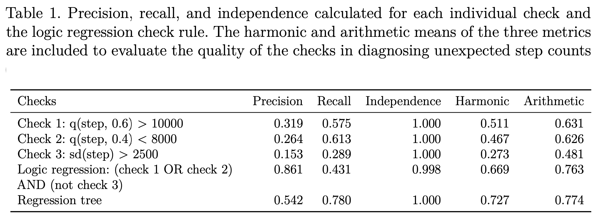
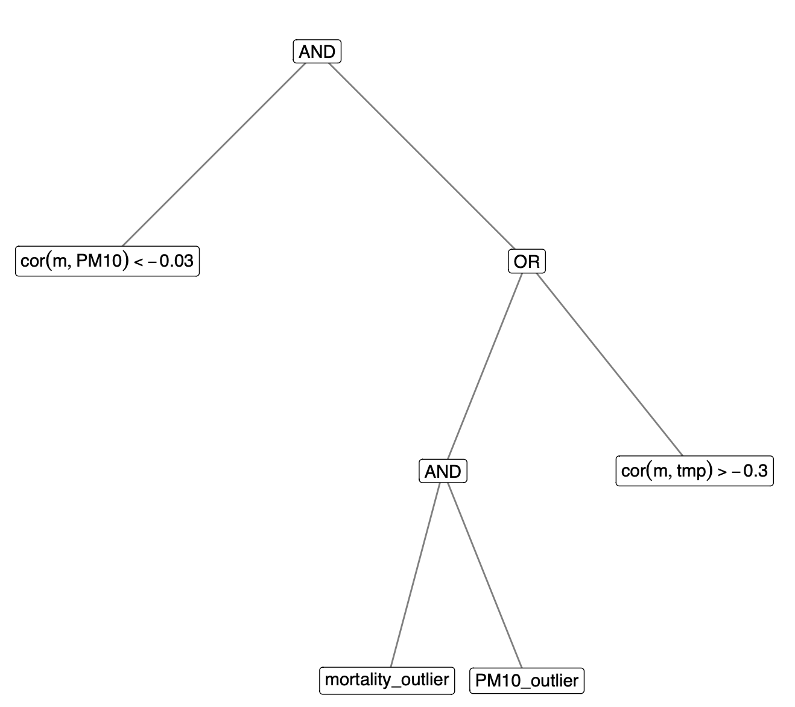
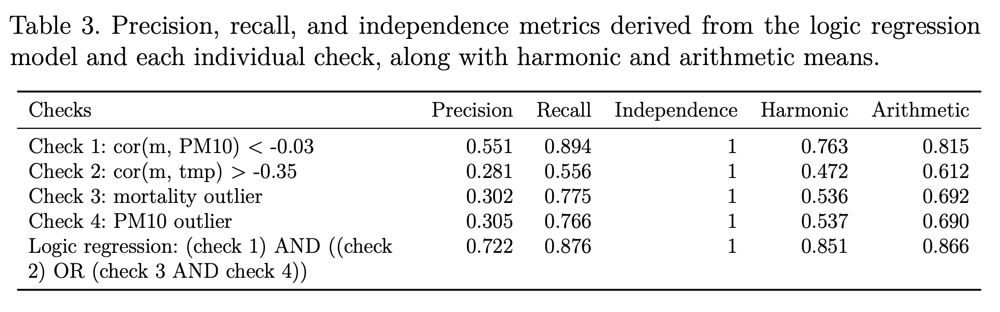
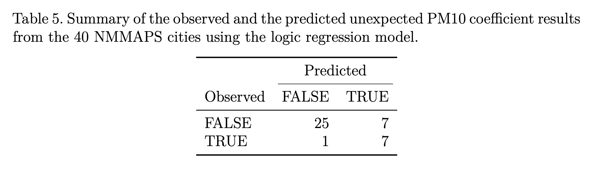

[1] NAUniversity of Texas at Austin
2025-05-01
Example 1:
Calculate the mean of penguins bill length
Why are we getting NA???
Example 3:
A basic linear regression of mortality on PM10
# A tibble: 2 × 5
term estimate std.error statistic p.value
<chr> <dbl> <dbl> <dbl> <dbl>
1 (Intercept) 183. 2.62 69.7 4.28e-277
2 pm10 -0.0120 0.0903 -0.133 8.94e- 1Why is the pm10 coefficient negative???
In every step, analysts need to compare the expectation and reality

. . .
Some unexpected results are easy to diagnose
Some require more domain knowledge:
Sometimes, you need multiple checks to safeguard a result -> see the next step count example
Consider a 30-day step count experiment in a public health setting. Subjects are instructed to walk at least 8,000 steps each day, with an expected average of 9,000 steps, tracked by a step counter app. Given the requirements of the study, we form our expectation as follows:
Many checks are possible to ensure the average fall into the expected range:
These checks are similar to unit tests in software development, but they are not deterministic – meaning a check might pass (or fail) even when the result is unexpected (or expected).
Still, they can be helpful for diagnosing what might be going wrong in the analysis.
Can we strike a balance between effectively detecting unexpected outcomes and maintaining a reasonable false positive rate?

Ruczinski et al., 2003 for SNP microarray data
Construct Boolean expressions \(\mathcal{L}(X_1, X_2, \cdots, X_n)\), e.g. \(X_1 \text{ AND } (X_2 \text{ OR } X_3)\) from logical operations:
AND (\(\land\)), OR (\(\lor\)) and NOT (\(\neg\))
The logic regression model:
\[E(Y) = \mathcal{L}(X_1, X_2, \cdots, X_n)\]
Optimize through simulated annealing to minimize the misclassification error
Six possible moves to grow or prune the tree

Accuracy measures (precision and recall) as metrics from binary classification errors

Total correlation - a generalization of mutual information
\[\sum_{x_1} \sum_{x_2} \cdots \sum_{x_n} p(x_1, x_2, \cdots, x_n) \log \frac{p(x_1, x_2, \cdots, x_n)}{p(x_1)p(x_2) \cdots p(x_n)}\]
Independency = 1 - total correlation per observation


Study the association between short-term, day-to-day changes in particulate matter air pollution (PM10) and daily mortality counts using the National Morbidity, Mortality, and Air Pollution Study (NMMAPS) data
Build the checks on the NYC data and apply them to the other 39 cities in the NMMAPS dataset
Model: a simple GLM with Poisson link \[g(\text{mortality}) = \beta_0 + \beta_1 \text{PM10} + \beta_2 \text{temperature}\]
Expectation: The PM10 coefficient \(\beta_1\) lies between [0, 0.005], based on previous work and the range of effect sizes published in the literature.



Accuracy rate of 80%: correctly predicts the PM10 coefficient status of 32 cities
Recall rate of 88%: correctly identifies 7 (Atlanta, Austin, Memphis, Orlando, Salt Lake City, San Antonio, Tampa) out of the 8 unexpected outcomes
Visualization methods are also valuable tools for assessing data assumptions and can potentially be formalized as analysis validation checks.
Systematically generating realistic simulated data is a key component of our approach and is deserving of further consideration.
Communicating the process of data analysis is a key element to providing transparency, improving reproducibility, and building trust with a range of audiences. The analysis validation checks described here provide a general way to encode the assumptions that an data analyst makes about the data and statistical tools applied to the data.
https://sherryzhang-sdss2025.netlify.app